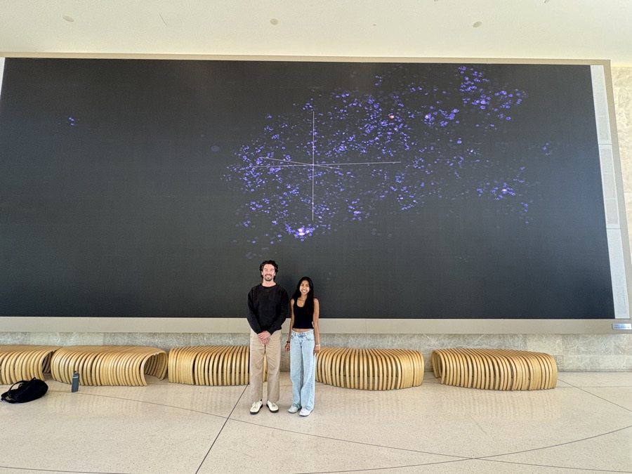
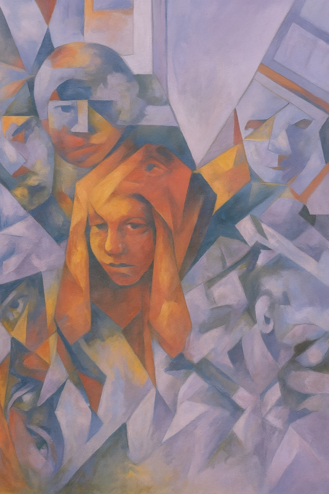

Featured projects
-
Fall 2026 · at Illinois

-
Disruption Lab
Gies
Software Engineer
Building a RAG chatbot with Gies College of Business to centralize school resources for 10K+ students
-
CUBE Consulting
ML Engineering Consultant
Training a clinical ML model for VR therapy startup VerityXR to personalize patient treatment
- Quant @ Illinois Software Engineer
- CS STARS Stars Research Scholar & Ambassador
-
Disruption Lab
Gies
Software Engineer
-
Summer 2026
Autonomous trading system
Software Engineer Intern · LBal Trading
- Turns daily options-chain snapshots into model-based trade calls and executes them on a paper account
- A full-stack portfolio-management dashboard with PostgreSQL and MLflow telemetry
-
May 2026 – now
LifeChapters in progress
Software Development Intern · Rethink Yearbooks
- An AI pipeline that turns a messy camera roll into a coherent photobook
- Face recognition, VLM captioning, and LLM assembly
-
 Summer 2025
Summer 2025Automated re-prompting pipeline
AI Engineering Intern · AIMon (Bessemer-backed)
- Improved LLM instruction following by 22%, enabling 3 to 7B models to beat GPT-4o
- Productized and open-sourced the API and eval datasets with a technical blog
-

2025 – 26Finding Nearest Neighbors
Solo exhibitor · The Harker School
- A real-time pipeline embedding audience words into a live 3D t-SNE projection
- 100+ words added over async WebSockets to reshape the clusters live
-
Presenter

Creativity in the AI AgeCredo AI · Sept 2025- Presented an interactive Turing Test for Art: visitors tried to tell my oil paintings from AI-generated replicas
- Discussed AI ethics with 90+ attendees at Credo AI’s invite-only Agents of Trust Summit